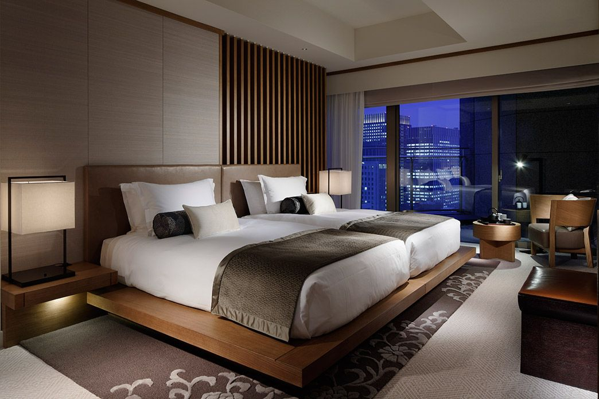

Deluxe Rooms (All Twin Beds)
A Deluxe room with standard 2 Single beds. Room has air conditioning, direct dial telephone, satellite TV, writing desk and chair, hair dryer, electronic safe, tea & coffee making facilities and central heating. En-suite bathroom with shower and all amenities.

Super Deluxe Rooms
Executive Rooms have king-size bed and a pleasant view. All rooms have two-line direct dialing facility, minibar and in-room tea/coffee-maker.Facilities also include satellite TV, writing desk and chair, hair dryer, electronic safe, and central heating. En-suite bathroom with shower and all amenities.
Royal Suite
36 square metres of floor space make the room the favourite of guests who like to relax and enjoy the full splendour of this very spacious room. The antique furniture and ornate furnishings have recently been lovingly restored to ensure the most luxurious of surroundings.
Presidential Suite (Two Rooms with attached Baths)
An experience of richness blended with royal luxury is what awaits the guests in the 'Presidential Suite' at 'Hotel Royal'. With furniture that adds to the theme of the presidential suite you will be taken to an era of royality, and your stay will be a cherished memory for times to come. Two luxurious bedrooms and a centered drawing room lend a President's feel to the guests.